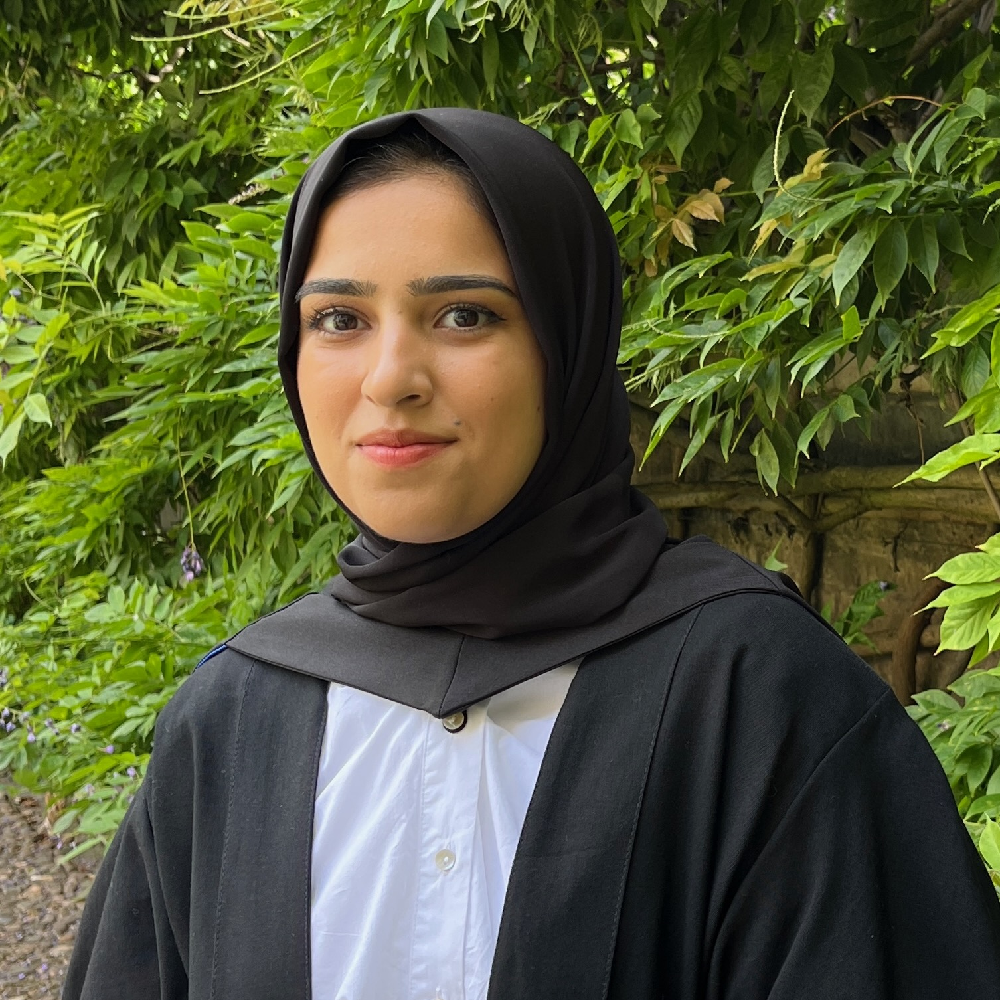

Computer vision · Medical imaging · AI for healthcare
Hoda Kalabizadeh
PhD Researcher · University of Oxford
I develop computer vision models for medical image analysis, with a focus on robustness across imaging domains and translation into clinical practice.
Explore my research →
About my work
Research interests
My research focuses on translating deep learning models from research into clinical practice. In particular, I develop computer vision models designed to be robust to domain shifts, applying them to accurate automated hippocampal segmentation for the monitoring and assessment of dementia.
Recent work
Selected publications
Is Your Style Transfer Doing Anything Useful? An Investigation into Hippocampus Segmentation and the Role of Preprocessing
Read paper ↗Get in touch
Contact
For research enquiries and collaborations, email hoda.kalabizadeh@cs.ox.ac.uk.